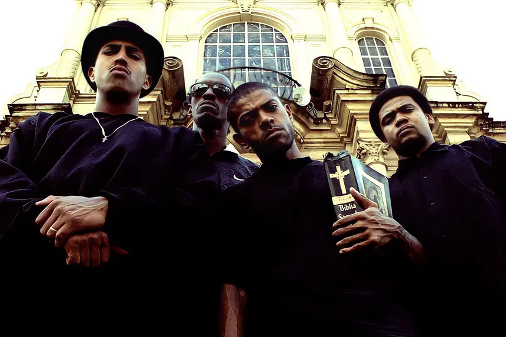

Compositor, dramaturgo e escritor, Chico é um dos maiores nomes da MPB. Suas músicas combinam poesia, crítica política e resistência durante a ditadura militar.

Racionais MC’s
Grupo de rap formado nos anos 90, Racionais deu voz às periferias de SP. Suas letras denunciam o racismo, a violência e as desigualdades sociais brasileiras.
Artes Visuais
Lygia Clark
Artista visual e pioneira da arte interativa, rompeu com a arte tradicional. Suas obras convidam o público à participação, explorando corpo, espaço e sensações.
Cildo Meireles
Artista conceitual, usou instalações e objetos para criticar a ditadura e o consumo. Suas obras são provocativas, sensoriais e politicamente engajadas.